Manual de GameShow
Cómo preparar, crear y dirigir un concurso de principio a fin: desde entender qué es la app hasta dejar la sala lista el día del evento.
Qué es GameShow y para qué sirve
GameShow es una plataforma web para montar concursos tipo programa de televisión en eventos en directo. Sustituye por completo a lo que antes hacíamos con AhaSlides y PowerPoint: en lugar de pasar diapositivas y llevar la cuenta a mano, todo el concurso —preguntas, marcador, tiempos, pulsadores, bloqueos— se controla desde un único sitio y se sincroniza solo entre todos los dispositivos.
La idea es sencilla: una persona dirige el juego desde su iPad o tablet, los equipos juegan desde sus propios iPads, y una pantalla grande muestra al público lo que pasa, con su marcador, sus animaciones y su cuenta atrás. Todo en tiempo real: cuando el coordinador lanza una prueba, aparece al instante en los iPads de los jugadores y en la pantalla de la sala.
Las cuatro caras de la app
GameShow tiene cuatro vistas, cada una para una función. Conviene tenerlas claras porque cada persona usa la suya:
| Vista | Quién la usa | Dispositivo | Para qué |
|---|---|---|---|
Backoffice/admin | Quien prepara el juego | Ordenador | Crear y editar juegos, rondas y pruebas · pide contraseña |
Coordinador/director | Quien dirige en directo | iPad, tablet u ordenador | Lanzar pruebas, puntos, tiempos, pulsadores · pide contraseña |
Jugador/play | Cada equipo | iPad | Ver las pruebas, responder y pulsar · QR o código del juego |
Pantalla/screen | El público | Ordenador + proyector | Vista espectacular de solo lectura · libre |
Cómo encaja todo
- Antes del evento, en el ordenador, alguien entra al backoffice y crea el juego: nombre, preguntas organizadas en rondas, tipos de prueba, y lo publica.
- El día del evento se monta la sala: el ordenador con el proyector mostrando la pantalla, y los iPads repartidos a los equipos.
- El coordinador abre su panel y dirige el concurso lanzando las pruebas en el orden que quiera, como si fueran botones.
- Al final, el marcador de la pantalla de sala muestra la clasificación y el equipo ganador.
Acceso y contraseña
El backoffice y el coordinador piden una contraseña general del equipo. Una vez dentro, el navegador recuerda la sesión mientras se use (caduca tras 12 horas sin actividad). Los iPads y la pantalla no piden contraseña: los iPads entran con el código del juego o escaneando el QR, y la pantalla es de solo lectura.
La dirección principal de la web abre la pantalla de acceso: la contraseña y, debajo, el botón «🎮 Soy jugador», por si algún equipo entra desde ahí en vez de con el QR. Al entrar con la contraseña aparecen dos botones del mismo tamaño:
- «Soy coordinador»: los juegos con partida en marcha, para abrir el coordinador o la pantalla de sala.
- «Backoffice»: crear y preparar juegos, plantillas y descargas (incluido el kit sin internet).
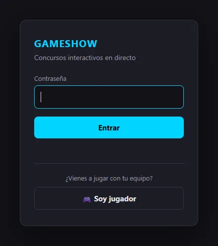
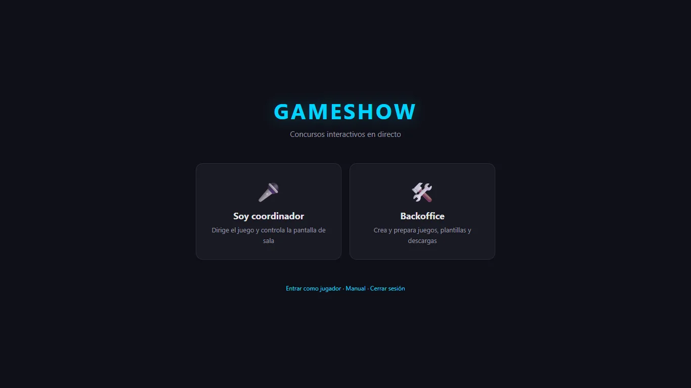
- Cambiar la contraseña: en el backoffice, botón 🔑 Contraseña. Al cambiarla se cierra la sesión en el resto de dispositivos, incluidos los coordinadores abiertos.
- Si se olvida: la contraseña configurada en el servidor funciona siempre como llave maestra (en Render, variable
ADMIN_PASSWORD; en el kit sin internet, archivodatos\ajustes.env). Entras con ella y pones una nueva. - Salir: botón Salir en el backoffice y en el coordinador.
Crear un juego de principio a fin
El backoffice es donde se construye todo el concurso. Se accede desde un ordenador en /admin. No hace falta instalar nada: funciona en el navegador.
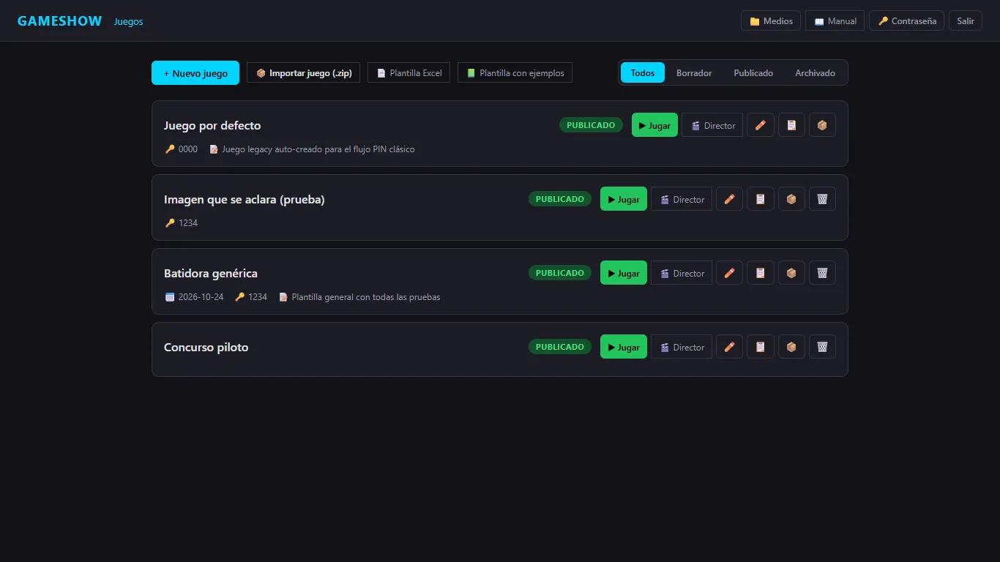
Cómo se organiza un juego
Un concurso tiene tres niveles, como muñecas rusas: un juego contiene rondas, y cada ronda contiene pruebas.
- Juego: el concurso completo de un evento (ej. «Concurso fin de campamento 2026»).
- Rondas: bloques dentro del juego, cada uno de un tipo de prueba (ej. «Ronda 1 — Cultura general» de tipo multirespuesta).
- Pruebas: los ítems concretos dentro de cada ronda.
Crear el juego
Al crear un juego se indica:
- Nombre y fecha del evento.
- Estado: empieza siempre como borrador. Un borrador se edita libremente pero todavía no se puede jugar. Cuando esté listo, se pasa a publicado (ver Validación).
- Código de acceso: un código corto (hasta 6 cifras) que los jugadores introducen en sus iPads para entrar al juego correcto. Es opcional: si lo dejas vacío, se entra sin código. Quien entra por el QR de sala no tiene que teclearlo, y si cambias el código, los QR y accesos anteriores dejan de valer.
- Nota interna: opcional, solo para ti. No la ve nadie durante el juego.
Un juego ya creado se puede duplicar entero (con todas sus rondas y pruebas), muy cómodo para reutilizar un concurso cambiando solo lo necesario.
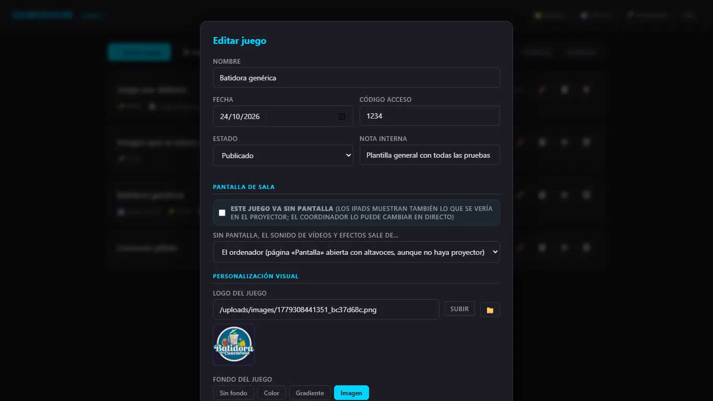
Crear las rondas
Dentro del juego se añaden rondas. De cada una se define el nombre, el tipo de prueba (una ronda es de un solo tipo) y, opcionalmente, su logo y fondo propios para la pantalla de sala. Las rondas se reordenan arrastrándolas por el asa ⠿; las preguntas de una ronda, con las flechas ↑ ↓. El orden de las rondas es la escaleta: la barra «Rondas» del coordinador las muestra numeradas en ese mismo orden, y si las arrastras con el coordinador abierto se reordena solo, sin recargar.
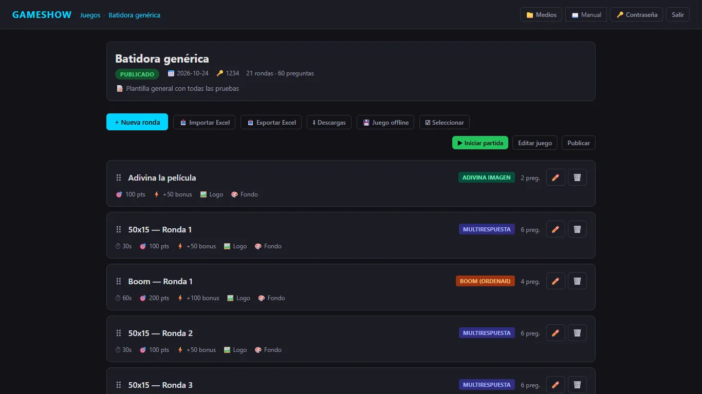
Crear las pruebas: dos caminos
Hay dos formas de meter pruebas dentro de una ronda: a mano, una a una con un formulario adaptado al tipo, o por Excel, subiendo muchas de golpe. Ambos caminos pasan por el mismo control de calidad (ver Validación).
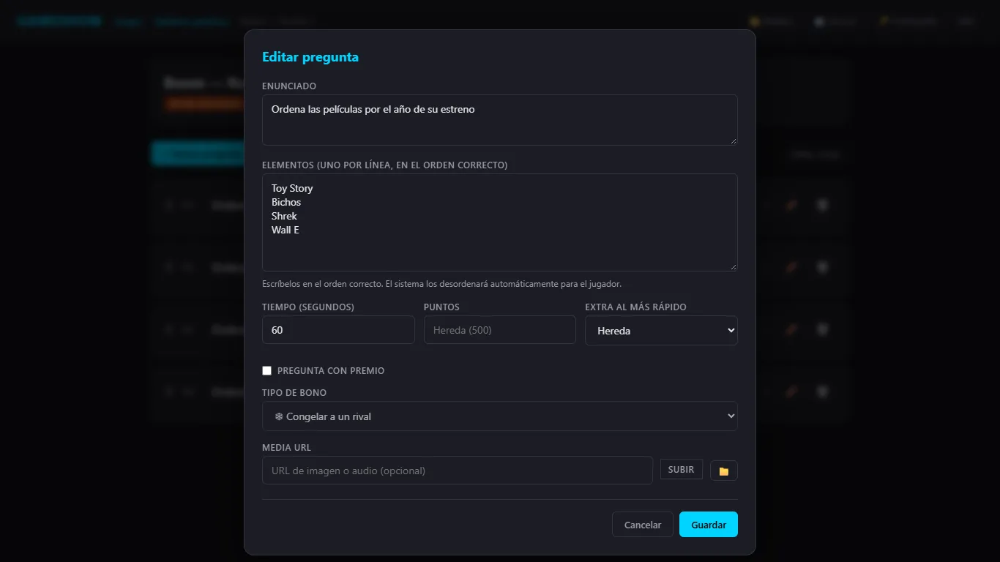
Los tipos de prueba (y qué necesita cada uno)
GameShow tiene doce tipos. Para cada uno, qué es, cómo se juega y —lo más importante— qué necesita para estar completa: si le falta el campo clave, la app la marca como incompleta y no te deja publicar hasta arreglarla.
Multirespuesta (50×15)
La pregunta de toda la vida con opciones. Cada equipo selecciona en su iPad antes de que acabe el tiempo; cuanto más rápido acierta, más puntos. Si marcas varias opciones correctas, acierta quien elija cualquiera de ellas.
Requisito Enunciado · ≥2 opciones · ≥1 correcta marcadaPulsador rápido
Pregunta abierta con buzzer. Los equipos pulsan; el coordinador ve la cola por orden. El primero responde; si falla, rebota al siguiente. Un equipo que falla ya no puede volver a pulsar en esa pregunta: su pulsador se queda gris con el aviso «Ya fallasteis». En «Resultados por equipo» sale quién acertó (con sus puntos) y quién falló.
Requisito Enunciado · RespuestaPrecio justo
Cada equipo escribe un número; gana quien más se acerque sin pasarse. Si dos equipos ponen la misma cifra ganadora, gana el que respondió antes, y el otro ve en su iPad que acertó pero fue más lento.
Requisito Enunciado · Valor correcto (el0 vale)
Boom (ordenar)
En el iPad salen las opciones a la izquierda y los huecos numerados (1, 2, 3…) a la derecha: el jugador arrastra cada tarjeta a su hueco, o la toca y después toca el hueco. Puede cambiarlas de hueco o devolverlas a las opciones hasta que pulsa «Enviar» (se activa cuando están todas colocadas). Introduce los elementos ya en el orden bueno: el orden correcto se toma de ahí. En los iPads y en la pantalla aparecen barajados, así que no importa que los escribas ordenados.
Requisito Enunciado · ≥2 elementos · orden correcto completo (automático desde el backoffice)Ruleta de la suerte
Una frase oculta que se revela letra a letra. Los equipos pulsan para resolver. No tiene temporizador: un acierto suma los puntos enteros de la ronda.
Requisito Frase (la pista es opcional)Adivina la imagen
Una imagen tapada por una cuadrícula que el coordinador destapa casilla a casilla mientras los equipos pulsan. No tiene temporizador: un acierto suma los puntos enteros de la ronda. La respuesta es opcional: si la pones, el coordinador la puede sacar en la pantalla con «Mostrar respuesta».
Requisito ImagenImagen que se aclara
Una imagen que empieza pixelada o desenfocada (se elige en cada pregunta) y se va aclarando: sola en los segundos que indiques, o a mano con una barra del coordinador. Los equipos pulsan cuando creen saberlo: la imagen se para mientras responden; si aciertan se revela, y si fallan sigue aclarándose. Cuanto menos nítida estaba al pulsar, más puntos: todos los puntos con la imagen irreconocible y un mínimo del 20 % casi nítida. En el backoffice hay una vista previa con barra para ver cómo quedará. Con «Mostrar respuesta» el coordinador puede sacar la respuesta en la pantalla en cualquier momento.
Requisito Imagen · respuestaImagen fija
Una imagen o vídeo estático que el coordinador gestiona de viva voz, con pulsador o sin él. No tiene temporizador: un acierto suma los puntos enteros.
Requisito Imagen o vídeoAdivina la canción
Una canción que empieza distorsionada y se va aclarando con el Chaos Studio mientras los equipos pulsan. El audio lo sirve el Chaos Studio aparte (ver Sonido).
La pista se sube limpia: la canción original, sin efectos ni distorsión. La distorsión la pone la app con el Chaos Studio y se va quitando durante la prueba; si subes una pista ya distorsionada, al final no sonará clara.
Requisito Respuesta (no hace falta subir el audio)Identidad (emparejar)
En el iPad salen arriba las parejas (el elemento fijo con un hueco al lado) y debajo las respuestas desordenadas. El jugador arrastra cada respuesta a su hueco, o la toca y después toca el hueco; puede cambiarlas hasta enviar. Cada elemento puede ser una foto, un texto o ambos: el tamaño de las tarjetas se ajusta solo para que todo quepa en pantalla (con muchas parejas, se ponen dos por fila). Puntúa cada pareja acertada; la parte de rapidez y el extra, solo si las acierta todas (ver Puntuación). Si se acaba el tiempo sin enviar, cuenta lo que tenga colocado; un hueco vacío no puntúa. Al revelar, cada iPad ve sus parejas en verde o rojo; el que no respondió ve las correctas colocándose a la vez que en la pantalla.
Requisito Parejas de elementos (foto y/o texto en cada lado)Respuesta abierta (subpreguntas)
Una pregunta con un enunciado general (opcional) y varias subpreguntas que se lanzan a la vez; lo normal es una pregunta por ronda. Cada equipo escribe sus respuestas en el iPad y las envía. Sirve para el estilo «Lo sabe no lo sabe» (sin cuenta atrás) o para una pregunta abierta con tiempo: la cuenta atrás es opcional y se elige en cada pregunta.
En cada subpregunta se pone la respuesta correcta (la que sale al revelar) y, si quieres, otras válidas en un solo campo separadas por / (por ejemplo Miguel de Cervantes / el manco de Lepanto). Da igual mayúsculas, tildes (la ñ cuenta como n), signos y espacios: «cervántes» vale por «Cervantes». Lo que coincide se corrige solo; lo demás sale en rojo para que lo valides tú.
Puntos: cada equipo se lleva la parte proporcional de los puntos según lo que acierte (3 de 4 → el 75 %). El que más acierta gana además el extra (+10 %, si está activado); si empatan, el que envió antes. Los puntos se suman al revelar la última subpregunta, como en Boom e Identidad.
Requisito ≥1 subpregunta, cada una con su texto y su respuestaPictionary (dibujar y adivinar)
Cada pregunta es una palabra o concepto que alguien dibuja mientras los demás intentan adivinarlo con el pulsador. Opcionalmente, una categoría («Películas», «Animales»…) que ven todos como pista. La palabra solo la ven el coordinador y quien dibuja; los demás, al acertar o al mostrarla. El dibujo se ve en directo en la pantalla de sala (y, sin pantalla, en el escenario de cada iPad).
En la ronda se elige quién dibuja:
- Un equipo en cada palabra, en su iPad: los demás equipos adivinan. Los turnos pueden ser automáticos (el programa propone a quién le toca, al azar, y no repite hasta que han dibujado todos; prefiere equipos conectados y sin congelar) o los elige el coordinador. En los dos casos el coordinador puede cambiar el equipo antes de empezar.
- Un iPad de dibujo fijo (la «pizarra»): un iPad aparte, enlazado con un QR desde el coordinador, dibuja todas las palabras (por ejemplo, un niño que sale). Pulsan todos los equipos y quien dibuja no suma.
Puntos: el equipo que adivina gana la mitad de los puntos fija y la otra mitad según la rapidez (cuanto antes pulse, más; sin tiempo, los puntos enteros). Con «Puntos para el equipo que dibuja», además, el que dibujaba se lleva esa cantidad fija cuando alguien lo adivina, para que interese dibujar bien (por ejemplo: 500 puntos y 50 para el que dibuja → quien adivina gana entre 250 y 500; el que dibuja, 50). Si nadie lo adivina, nadie suma. El tiempo es por palabra (60 s por defecto; 0 = sin límite) y se para mientras alguien responde: si falla, sigue solo.
Requisito la palabraKaraoke
La letra de una canción en pantalla mientras suena. Cada equipo tiene asignado un color (rojo, amarillo, azul o verde). El coordinador avanza por la letra y pone de fondo un color o una combinación: solo cantan los equipos cuyo color está en pantalla. Al terminar, el coordinador da los puntos a mano al color que mejor lo haya hecho (se reparten entre sus equipos). Cada canción de la ronda empieza limpia.
Si hay más equipos que colores, varios equipos comparten color y cantan juntos; el botón «🎲 Repartir automáticamente» los reparte equilibrados. En la pantalla de sala el fondo muestra solo los colores que cantan (uno ocupa toda la pantalla, dos la parten en mitades, cuatro en cuartos) y la letra se ajusta sola al espacio, con la estrofa siguiente debajo, más pequeña y en gris. Cada iPad lleva un marco de su color, encendido toda la prueba; el iPad no avisa de cuándo cantar: los equipos lo tienen que ver en la pantalla.
Requisito Letra (bloques separados por---) · colores en juego
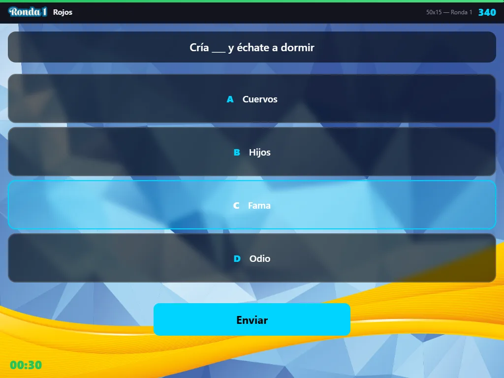
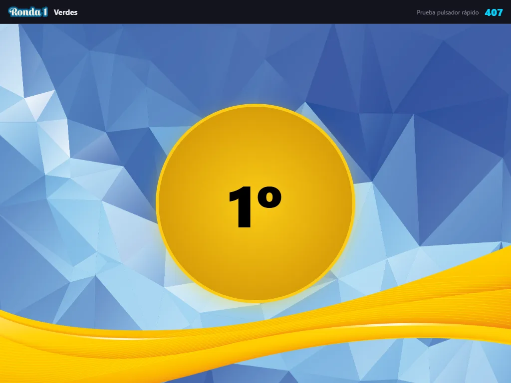
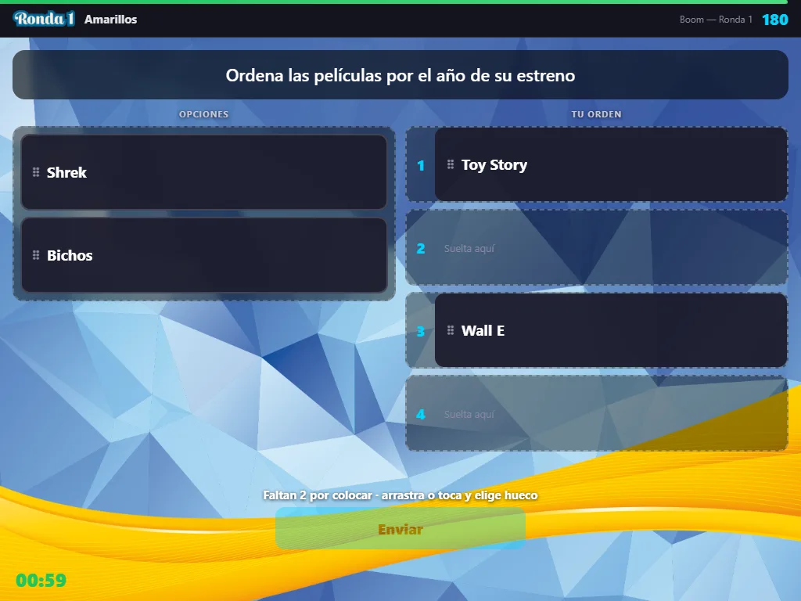
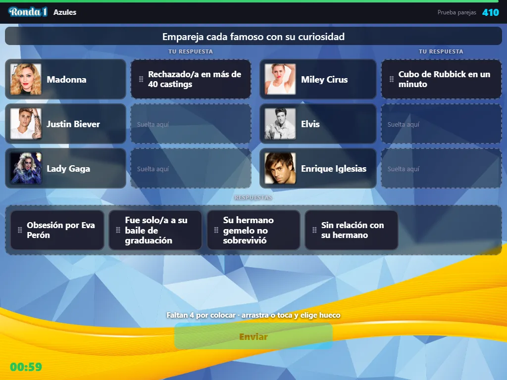
Importar pruebas desde Excel
Para meter muchas preguntas de golpe se usa un Excel con una pestaña por tipo de prueba. Se descarga, se rellena y se sube con «📥 Importar Excel» dentro del juego. Hay tres puntos de partida:
- «📄 Plantilla Excel en blanco» (en «⬇ Descargas», en la lista de juegos y dentro de cada juego, y en la ventana de importar): la plantilla vacía, con las columnas correctas y una hoja de instrucciones.
- «📗 Plantilla con ejemplos» (en los mismos sitios): la misma con una pregunta de ejemplo de cada tipo. Se puede importar tal cual en un juego de pruebas para ver cómo queda cada cosa.
- «📤 Exportar Excel» de un juego que ya tengas: sale en el mismo formato, así que sirve de base para otro parecido.
Lo importante al importar:
- No se descarta nada. Si una fila está a medias, se importa igual: la app prefiere guardar lo que haya y avisarte.
- Al terminar, te muestra un listado de qué preguntas entraron incompletas y qué les falta (hoja, ronda, fila y campo). Ese listado no desaparece solo.
- Si importas incompletas a un juego ya publicado, el juego se baja automáticamente a borrador como protección. Complétalas y vuelve a publicar.
- En correctas (multirespuesta) y orden_correcto (Boom) se escriben los números de columna separados por comas, por ejemplo
1,3. Si una opción queda vacía en medio, los números siguen refiriéndose a la columna. En Boom, si no indicas orden, vale el orden en que escribiste los elementos. - En la hoja Rondas, el tipo se puede escribir como el nombre de la pestaña («Precio Justo», «BOOM»…). Si no se reconoce, esa ronda no se crea y se avisa. El orden de las rondas es el de esa hoja.
- Las imágenes, vídeos y audios se ponen con su ruta (por ejemplo
/uploads/images/foto.jpg): súbelos antes desde 📁 Medios. - En Precio justo, una celda de valor vacía entra como incompleta; un
0escrito sí vale. - En Respuesta abierta va una fila por subpregunta. La primera fila de cada pregunta lleva el enunciado general (opcional), el tiempo, los puntos y el extra; las siguientes, solo la subpregunta, su respuesta y las otras válidas (todas en una celda, separadas por
/). Tiempo vacío = sin cuenta atrás. Para empezar otra pregunta en la misma ronda, escribe su enunciado general. - En Pictionary va una fila por palabra, con su categoría (opcional). Las columnas
quien_dibuja(equipooipad),turnos(autoocoordinador) ypuntos_dibujason de la ronda: vale lo de la primera fila que las tenga.tiempovacío usa el de la ronda (en la hoja Rondas,0= sin límite). - El karaoke no va por Excel: se crea a mano en el backoffice.
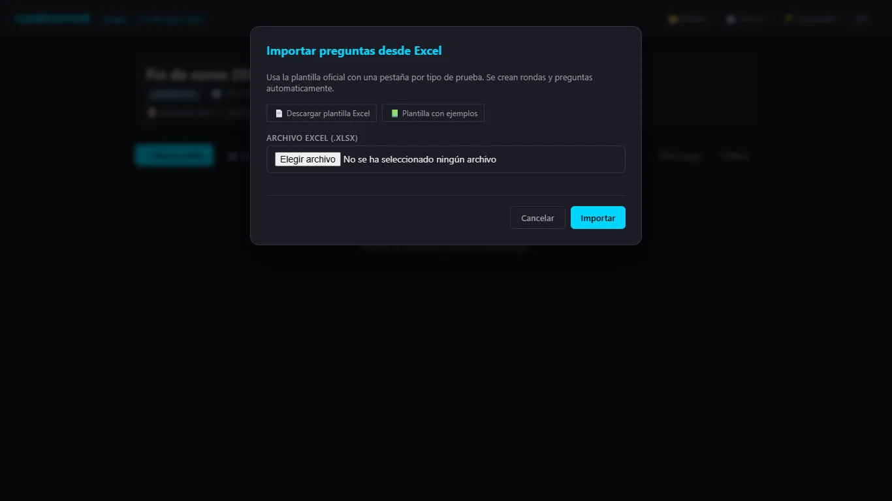
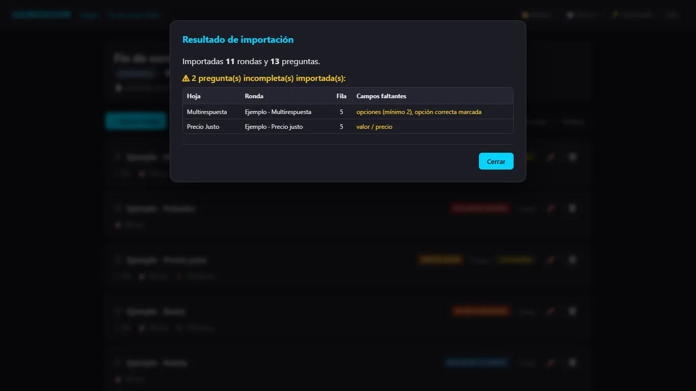
Validación: qué está completo y qué no
GameShow controla la calidad para que ninguna prueba a medias llegue a un juego que se va a jugar. Funciona en tres puntos:
- Marca visual: en la lista de preguntas, las incompletas aparecen con un aviso ⚠ Incompleta; al pasar el ratón dice qué falta. Las rondas con incompletas muestran un contador.
- No deja guardar a medias a mano: si dejas el campo clave en blanco al crear una prueba, no te deja guardarla y te señala qué falta. No pierdes lo escrito: la ventana sigue abierta.
- No deja publicar con incompletas: al pasar un juego a publicado, revisa todas sus pruebas; si alguna falla, bloquea la publicación y te lista qué pruebas, en qué ronda y qué les falta.
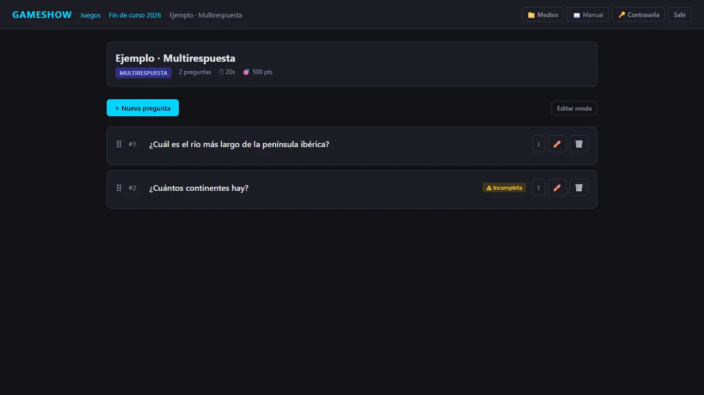
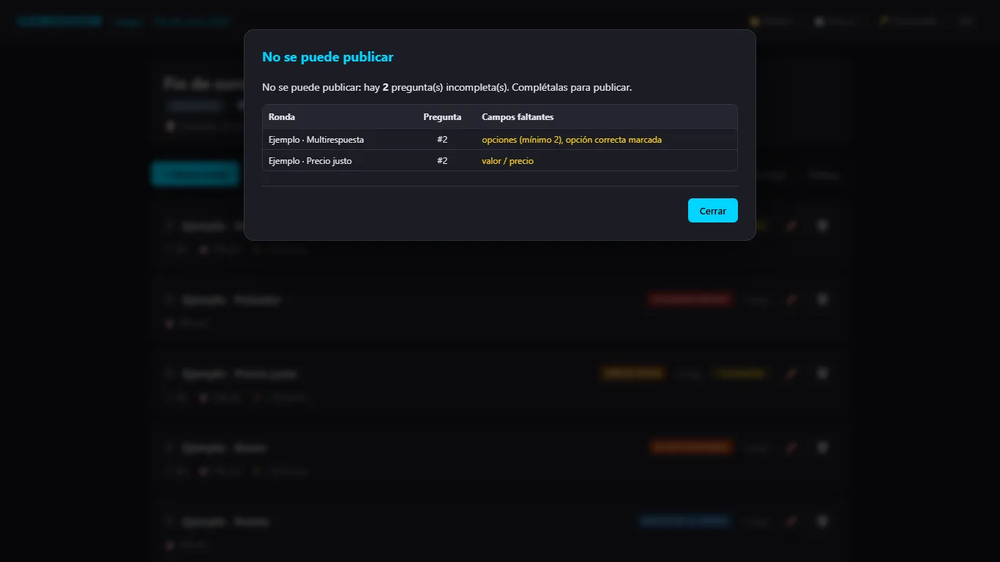
Puntuación
Cada ronda (y, si quieres, cada prueba) tiene tres campos:
- Puntos (500 por defecto): lo máximo que da acertar.
- Extra al más rápido (sí / no, por defecto sí): un 10 % más para el equipo más rápido de los que aciertan (con 500 puntos, +50).
- Penalización por fallo: opcional (normalmente 0).
Cómo se reparten. En las pruebas con tiempo (Multirespuesta, Boom, Identidad), la mitad de los puntos es por acertar y la otra mitad según la rapidez: con 500, quien acierta al instante se lleva 500, a mitad de tiempo 375 y en el último segundo 250. El tiempo se mide con milésimas desde que arranca el reloj (tras la cuenta atrás de «Abrir opciones»), así que con 500 puntos en 30 s un punto equivale a 0,12 s: prácticamente no hay empates.
Ejemplo: 500 puntos, 30 segundos, extra activado y cuatro equipos que aciertan:
| Equipo | Responde a los | Puntos |
|---|---|---|
| Rojo (el más rápido) | 3,0 s | 250 + 225 + 50 de extra = 525 |
| Azul | 12,0 s | 250 + 150 = 400 |
| Verde | 12,3 s | 250 + 147 = 397 |
| Amarillo | 25,0 s | 250 + 41 = 291 |
Casos especiales:
- Pulsador y pruebas sin tiempo (Ruleta, Adivina la imagen, Imagen fija, Adivina la canción): acertar da los puntos enteros; ser el primero en pulsar ya es la rapidez. Sin extra.
- Imagen que se aclara: según lo nítida que estaba al pulsar (todos los puntos con la imagen irreconocible, un 20 % casi nítida).
- Precio justo: gana quien dice la cifra más cercana sin pasarse y se lleva los puntos enteros. Si varios dicen esa misma cifra, ganan todos y el extra es para el que respondió antes.
- Identidad: la parte fija se reparte según las parejas acertadas (3 de 4 → el 75 % de esa mitad); la de rapidez y el extra, solo si las acierta todas.
- Respuesta abierta: los puntos según lo acertado (3 de 4 → el 75 %; aquí no cuenta la rapidez) y el extra para el que más acierta (empate: el que envió antes).
- Pictionary: con tiempo, mitad fija + mitad según lo rápido que pulsó quien acierta; sin tiempo, los puntos enteros. Aparte, los puntos fijos para el que dibuja.
Para cambiar los puntos de todo un juego de golpe, usa el botón «🎯 Puntos» dentro del juego: pone los mismos puntos y el mismo extra en todas sus rondas (o, marcando la casilla, en todos los juegos) y las preguntas pasan a heredarlos; la penalización, los tiempos y el bono especial no cambian. En una prueba, deja «Puntos» vacío y el extra en «Hereda» para que use lo de la ronda. Los juegos y Excel anteriores (con «puntos base» y «bonus») se convierten solos: los puntos son la suma de los dos.
Además, cada prueba puede llevar un bonus especial para el ganador, que se anuncia en la pantalla de sala: congelar a un rival, congelar a todos los rivales, puntos extra, o un anuncio con texto o imagen. El marcador general acumula todo, y el coordinador puede sumar o restar puntos a mano en cualquier momento.
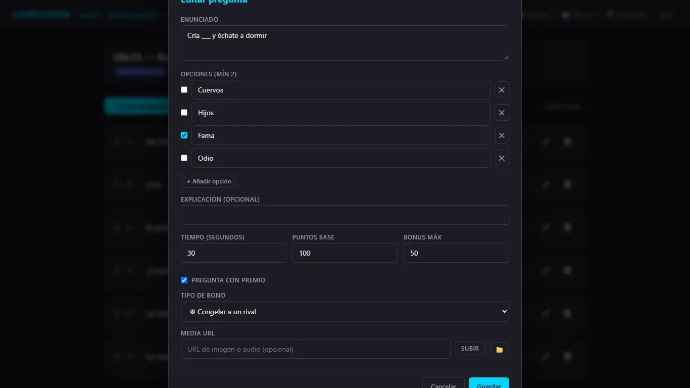
Publicar
Cuando el juego esté completo y revisado, se publica con el botón «Publicar» del juego (o cambiando su estado en «Editar juego»). En la lista aparece la etiqueta PUBLICADO y el botón «▶ Jugar». A partir de ahí los iPads pueden verlo y entrar con el código de acceso. Si quedan incompletas, la app no te deja publicar hasta resolverlas.
Exportar e importar un juego completo
Cada juego tiene un botón 📦 en la lista del backoffice que descarga un .zip con todo: rondas, pruebas, tema y todas sus imágenes, vídeos y audios. Con «📦 Importar juego (.zip)» se crea un juego nuevo a partir de ese archivo. Sirve para:
- Llevar un juego de la web al kit sin internet (y al revés). Si en ese ordenador aún no está el kit, es más cómodo el botón 💾 Juego offline: descarga el kit con el juego ya dentro (ver «Jugar sin internet»).
- Guardar una copia de seguridad de un juego antes de tocarlo.
- Pasar un juego a un compañero.
Al importar, los archivos que ya existen iguales se reutilizan, y si hay uno con el mismo nombre pero distinto contenido se guarda con otro nombre sin pisar nada. Al terminar te muestra un resumen, incluidos los archivos que ya faltaban en el juego original.
Dirigir el juego en directo
Con el juego publicado y la sala montada, el coordinador toma el control desde su iPad, tablet u ordenador en /director. El botón «📺 Pantalla» de la cabecera abre la pantalla de sala del juego. El panel está pensado para que, en un portátil normal sin pantalla completa, los botones de cada prueba se vean siempre sin tener que bajar.
La partida se inicia con «▶ Jugar» en el backoffice, que abre el coordinador. Si ese juego ya tiene una partida en marcha (por ejemplo, cerraste el coordinador sin querer), la continúa tal cual: equipos y puntos siguen igual. Para empezar de cero, usa «🗑 Borrar todo» en la cabecera del coordinador (borra equipos y puntos; los iPads vuelven al inicio).
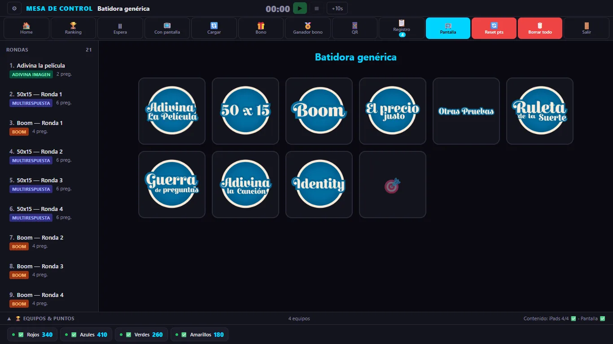
Varios coordinadores a la vez
Pueden dirigir el mismo juego varias personas a la vez, todas sincronizadas: una mesa técnica controla y el presentador solo mira; o el presentador lleva los pulsadores y la mesa los puntos; o una sola persona hace todo. Si uno lanza una prueba, los demás la ven al instante.
Lanzar pruebas
El panel muestra la lista completa de rondas y pruebas. No hay orden fijo: lanzas la que quieras cuando quieras, como hipervínculos de un PowerPoint. Al lanzarla, los iPads de jugadores se actualizan solos y la pantalla de sala la muestra a lo grande con su cuenta atrás. Con «🏠 Home» la sala y los iPads vuelven al menú de pruebas, y con «⏸ Espera» a la pantalla de espera.
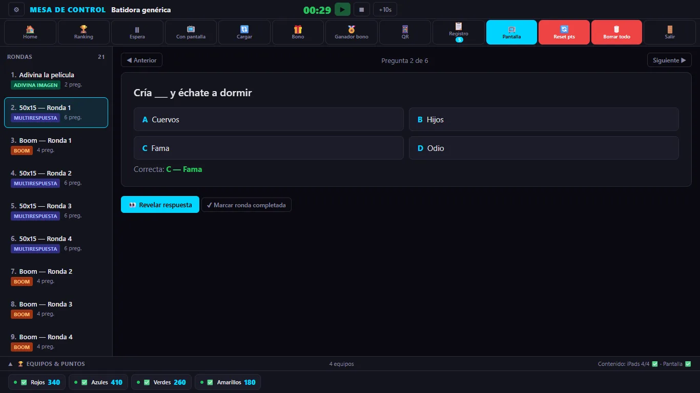
Controles durante una prueba
- Pulsador: ves la cola por orden y marcas acierto o fallo; si el primero falla, rebota al siguiente.
- Temporizador: lanzar (▶), cortar (■) o alargar (+10 s) la cuenta atrás, arriba en la cabecera.
- Revelar respuesta cuando decidas. Debajo sale «Resultados por equipo»: qué respondió cada uno y los puntos que se lleva (en las pruebas de pulsador, quién acertó y quién falló); con «Mostrar resultados» se ve también en la pantalla.
- Destapar (Adivina la imagen y Ruleta): cada clic revela un cuadrado o una letra.
- Distorsión (Adivina la canción): el control para ir limpiando el sonido.
- Respuesta abierta: va por pasos que se ven arriba del panel. Al lanzarla solo se ve el enunciado general; «👁 Mostrar subpreguntas» las enseña en la sala y en los iPads (aún sin poder escribir) y «▶ Abrir respuestas» deja escribir (y arranca la cuenta atrás, si la tiene). La pantalla dice cuántos equipos han respondido. Se pasa a corregir cuando envían todos, cuando se acaba el tiempo o con «■ Cerrar respuestas»; lo que un equipo tuviera escrito sin enviar cuenta igual (pero pierde cualquier desempate). Mientras se corrige, la sala y los iPads muestran «Corrigiendo…».
- Corregir (Respuesta abierta): se corrige subpregunta a subpregunta (pestañas 1, 2, 3…; cada una dice cuántas quedan en rojo). Las respuestas iguales van juntas con los equipos que las dieron: un toque las cambia entre ✓ y ✗ para todos. Lo que coincide con una respuesta válida ya sale en verde. Varios coordinadores pueden corregir a la vez. Después, «Revelar respuestas» e «Ir revelando» una a una: en la sala sale la respuesta a la derecha de cada subpregunta y cada iPad ve las suyas en verde o rojo (con la correcta debajo si falló). Si te equivocaste al corregir, puedes rectificar después en el mismo panel: se recalcula la pregunta (también quién gana el bonus) y el marcador se ajusta solo; queda en el «Registro». Si sales a otra pregunta a mitad de corregir, al volver sigue tal cual.
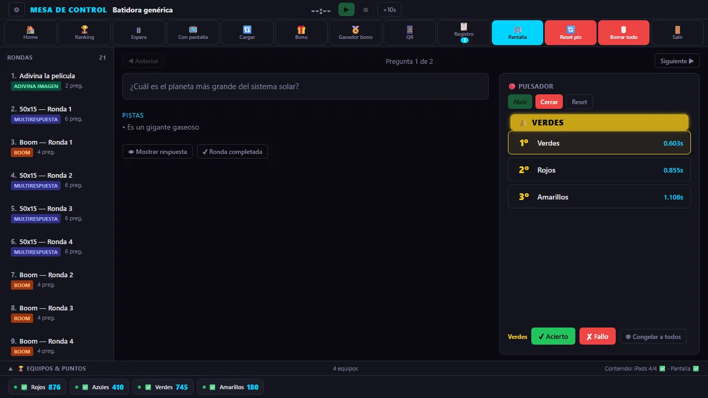
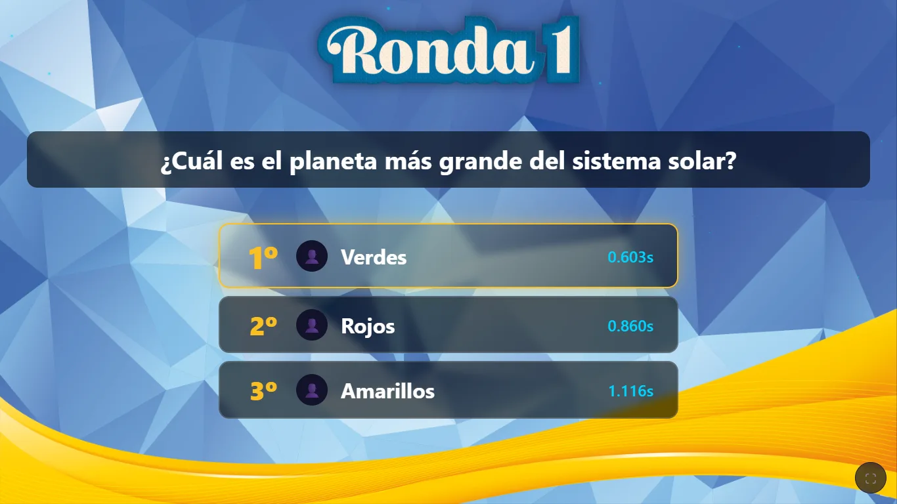
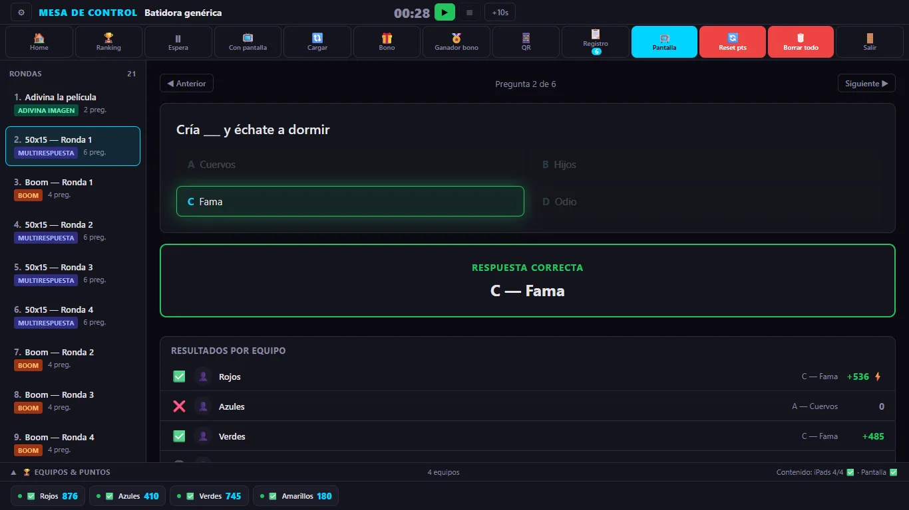
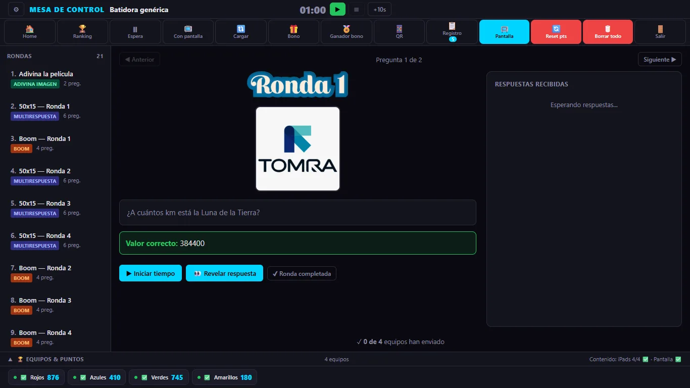
Terminar una ronda: en la última pregunta, «✓ Terminar ronda»; en cualquier pregunta, «✔ Ronda completada». Los dos hacen lo mismo: la marcan como completada y sacan en la pantalla el cartel de fin de ronda (si la pregunta tiene bono, antes se elige el ganador). Sirve para cortar una ronda a medias sin un corte brusco.
Protecciones y atajos de teclado
El panel está pensado para que un toque de más o una WiFi lenta no estropeen la partida:
- Doble toque en «Siguiente», «Acierto», «Abrir opciones» o en el reparto del karaoke: solo cuenta el primero. En los iPads, tocar dos veces seguidas no amplía ni mueve la pantalla.
- Al revelar, cada iPad muestra la respuesta correcta, la suya y si acertó (con los puntos). En las pruebas de pulsador dice quién acertó y si su equipo falló.
- «◀ Anterior» sobre una pregunta ya puntuada la muestra revelada con su resultado: no se puede volver a responder ni sumar puntos otra vez.
- «Espera» o «Home» a mitad de pregunta: aparece arriba el botón «↩ Volver a la pregunta» para seguir donde lo dejaste.
- Saltar a otra pregunta desde la rejilla cuando la actual tiene respuestas sin revelar: te pide confirmación, porque se perderían.
- Reiniciar puntuaciones deja también sin bonos ni congelaciones (útil entre el ensayo y el evento).
- Un equipo congelado no puede usar bonos mientras dure el bloqueo.
- Si un iPad se rompe o se queda sin batería: en «Editar equipo» (el lápiz del equipo) pulsa «📱 Pasar el equipo a otro iPad». Sale un QR y un código de 6 letras: el iPad nuevo escanea el QR, o en «Crea tu equipo» toca «Recuperar» y escribe el código. Sigue siendo el mismo equipo, con sus puntos y bonos. El código vale 10 minutos y una sola vez; el iPad viejo queda desconectado.
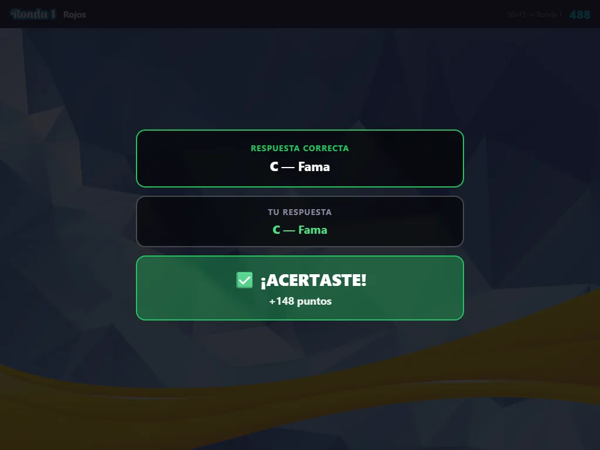
Atajos de teclado (con el coordinador en un ordenador): → siguiente · ← anterior · Espacio arranca el tiempo · R revela · B abre el pulsador · Esc cierra el marcador o el pulsador. Solo funcionan con una pregunta en curso y se ignoran si escribes en un campo o pulsas Ctrl/Cmd (así Ctrl+R recarga la página sin revelar nada). En las pruebas sin temporizador (pulsador, ruleta, Adivina la imagen, Imagen que se aclara, imagen fija, canción, karaoke), Espacio no hace nada. En el Pictionary el tiempo arranca con «Empezar a dibujar»; Espacio solo lo reanuda si lo habías parado.
Identidad. Pulsa "Abrir opciones" para mostrar la columna a emparejar: en los iPads arranca una cuenta atrás de 5 segundos antes de que empiece el tiempo, y en la pantalla de sala aparece la columna desordenada. Cuando se acaba el tiempo, revela las parejas correctas una a una con cada clic en «Ir revelando», de arriba abajo.
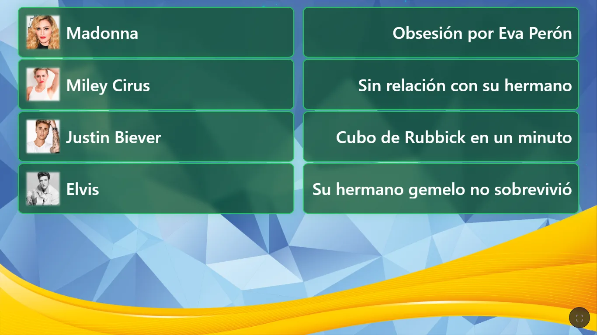
Imagen que se aclara. En el panel ves a la vez lo que ve la sala y la imagen real. Con «▶ Aclarar» empieza a aclararse y se abre el pulsador; «⏸ Pausa» la detiene. En modo «a mano» se usa la barra (mover la barra también abre el pulsador). Al lado se ve cuántos puntos vale acertar en ese momento, y en la cola del pulsador cuántos se lleva cada equipo según cuándo pulsó. Con un fallo, si no queda nadie en la cola, sigue aclarándose sola. «Mostrar respuesta» la saca en la pantalla, igual que en Adivina la imagen.
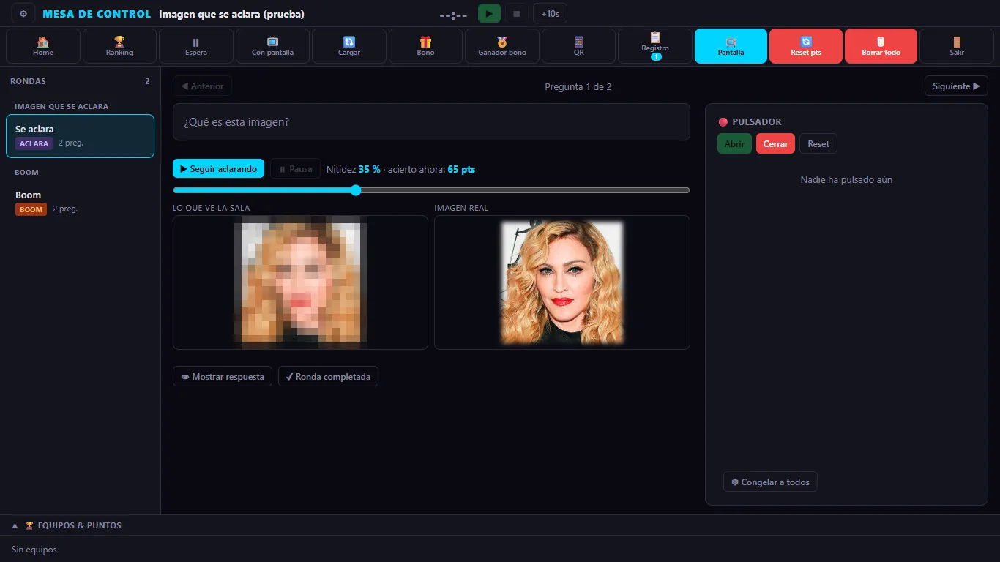
Pictionary. Al lanzar la palabra, el panel la muestra en grande (solo la ves tú) y la sala anuncia en grande a quién le toca dibujar. Si dibuja un equipo, debajo están todos los equipos para cambiar quién dibuja (con «✓ ya dibujó» y «sin conexión»). Con «▶ Empezar a dibujar» el que dibuja ve la palabra en su iPad, empieza el tiempo y se abre el pulsador para los demás. El panel enseña lo que se ve en la sala en pequeño. Cuando alguien pulsa, el tiempo se para («tiempo parado» en la sala y en el iPad que dibuja); con ✔ Acierto se revela la palabra sobre el dibujo y se reparten los puntos; con ✘ Fallo el tiempo sigue solo. Si nadie lo adivina, «🏳 Nadie lo adivina: mostrar la palabra» (o se acaba el tiempo). Volver a una palabra ya jugada la enseña con su dibujo, sin repuntuar.
Pizarra (iPad de dibujo fijo). En una ronda con «iPad de dibujo», el panel dice si la pizarra está conectada. «📱 QR de la pizarra» enseña un QR (y el enlace) para escanearlo con el iPad que va a dibujar; se puede hacer en cualquier momento y se queda enlazado para todas las palabras. Ese iPad solo sirve de pizarra: entre palabras dice «Pizarra lista». Si se abre en otro iPad, el anterior deja de serlo. El QR deja de valer si cambias el código de acceso del juego.
Dibujar en el iPad. A la izquierda (o abajo, con el iPad en vertical) están los colores, tres grosores, la goma, deshacer y borrar todo (pide un segundo toque para no borrar sin querer). Se dibuja con el dedo o con el Apple Pencil: en cuanto se usa el lápiz se activa «✍️ Solo lápiz» y la palma de la mano apoyada no pinta (se puede desactivar con ese botón). Si el iPad se corta o se recarga, recupera la palabra y el dibujo.
Boom. Igual: al acabar el tiempo el orden correcto no se ve entero. Con «Ir revelando» se destapa la posición 1, luego la 2… En la pantalla las que faltan salen como «?», y cada iPad va viendo en verde o rojo si acertó esa posición; el resultado final aparece al destapar la última. Los puntos se suman al destapar la última (también en Identidad), para mantener la emoción; si pasas a otra pregunta antes de terminar, se suman al salir.
Bonos y premios en directo
Algunas pruebas llevan un bonus configurado (ver Puntuación y bonus): una recompensa para el equipo ganador que entra en juego al cerrar la prueba. Hay dos clases. Los poderes de bloqueo —congelar a un rival o congelar a todos los rivales— el equipo los guarda y decide cuándo usarlos en una prueba posterior. Las recompensas instantáneas se aplican al momento de asignarlas: puntos extra (el ganador suma esa cantidad al marcador ahí mismo) y anuncio (un premio con texto y/o imagen que aparece en la pantalla de sala y en los iPads —la imagen arriba y el texto debajo; vale solo texto o solo imagen—, para que lo entregues o lo expliques de viva voz).
En todos los casos, al lanzar una prueba con bonus la sala avisa de que hay premio. En los puntos extra se muestra ya la cantidad (por ejemplo, "Puntos extra: +50"); en el anuncio el aviso es genérico y el contenido se revela solo después, al anunciar al ganador. El botón «🎁 Bono» de la cabecera quita o vuelve a poner ese aviso.
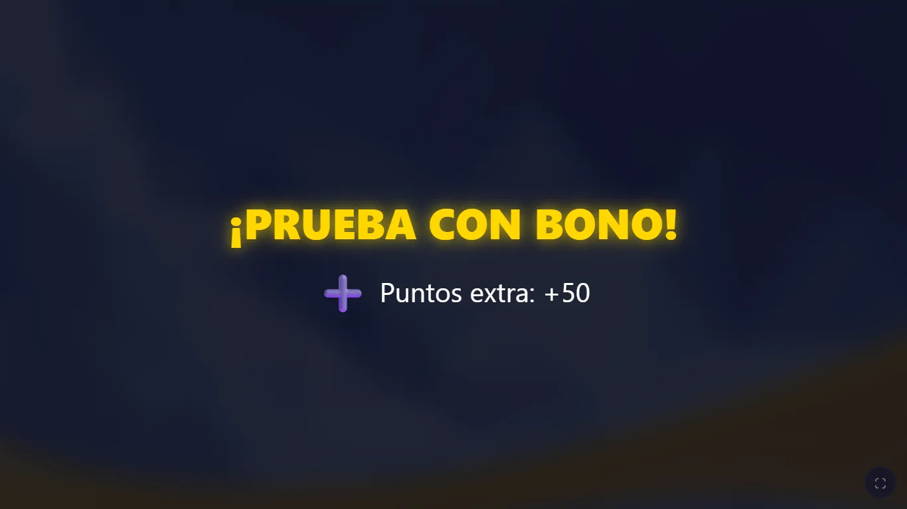
Asignar el premio al ganador
Cuando pasas a la siguiente pregunta («Siguiente», «Terminar ronda» o «Ronda completada») desde una prueba con bonus, se abre siempre la ventana de selección de ganador, tanto si lo dejaste en automático como si no:
- Si el bonus está configurado para asignarse automáticamente, el equipo ganador ya viene marcado: solo tienes que confirmar.
- Si no, eliges tú el equipo antes de continuar.
Al confirmar, la sala anuncia al ganador. El botón «🏅 Ganador bono» de la cabecera quita o vuelve a poner ese anuncio.
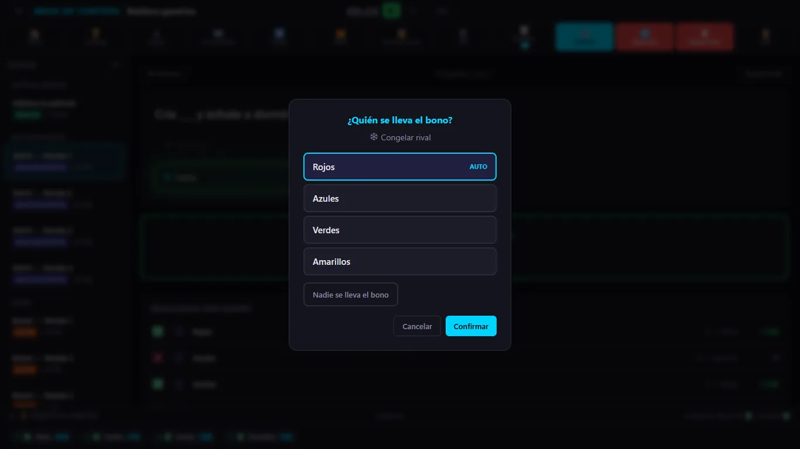
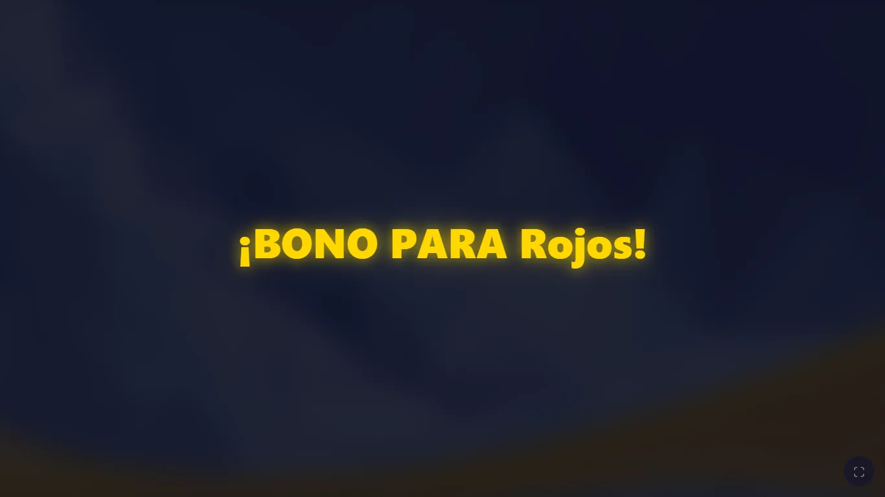
El registro
El botón «Registro» de la cabecera abre la lista de todo lo que ha pasado en la partida, con la hora y en qué ronda y pregunta: puntos sumados o restados a mano, aciertos y fallos del pulsador, cada pregunta puntuada sola (cuántos equipos acertaron), el reparto del karaoke, bonos ganados, usados o dados y quitados a mano, congelaciones y descongelaciones, equipos eliminados y reinicios. Sirve para resolver cualquier duda («¿por qué tenemos estos puntos?»). Se puede filtrar por Puntos, Bonos o Congelaciones. Un número en el botón avisa de lo que aún no has visto, y con el panel abierto se actualiza en vivo. Al reiniciar puntuaciones o la partida, el registro empieza de cero.
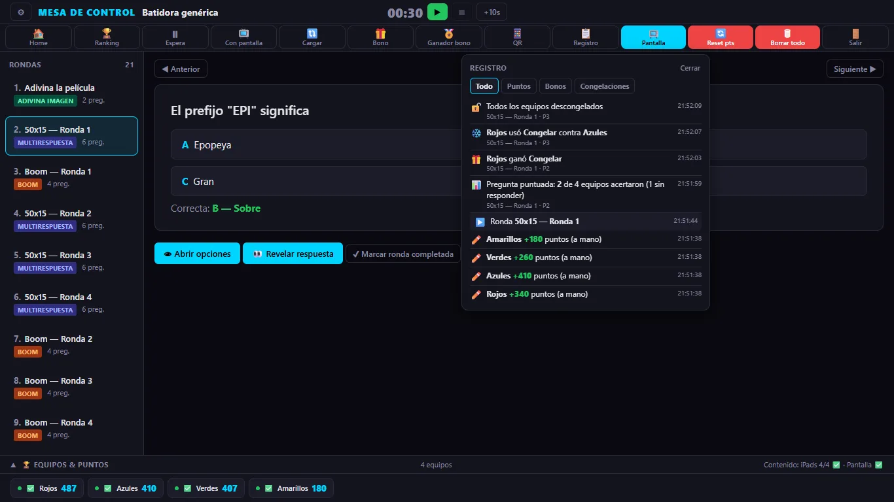
Cómo usan los bonos los jugadores
El equipo que tiene un bono lo ve siempre en su iPad con un botón disponible. Al pulsarlo, elige sobre qué equipo lo aplica y se activa al instante. El bono de congelar a todos no pide objetivo: bloquea a todos los rivales de golpe.
- En sala aparece una banda avisando del movimiento ("X congeló a Y"), que se retira sola a los pocos segundos para dar ambiente sin frenar el juego.
- En el iPad del equipo afectado aparece un aviso a pantalla completa ("¡TE HAN CONGELADO!") que le impide responder mientras dura el bloqueo.
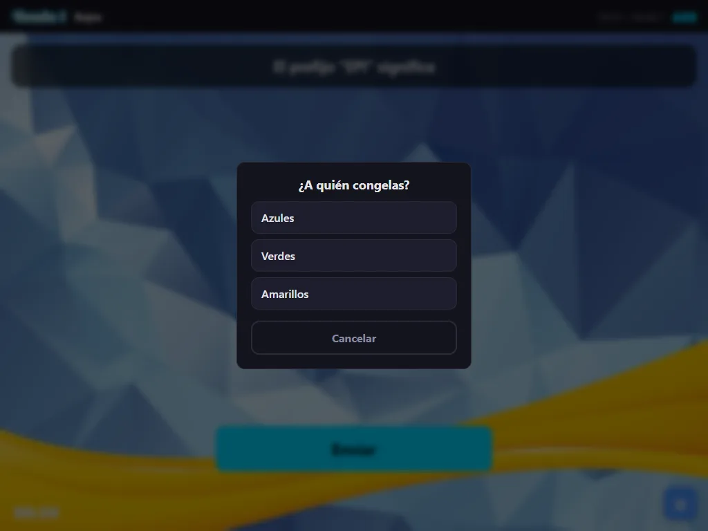
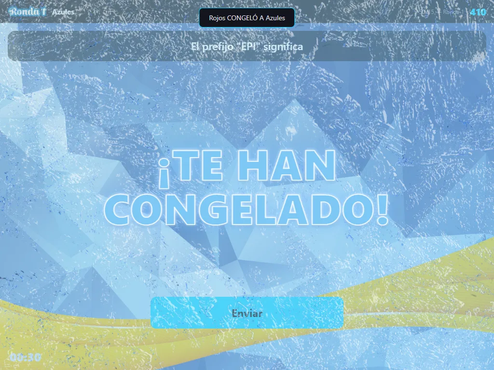
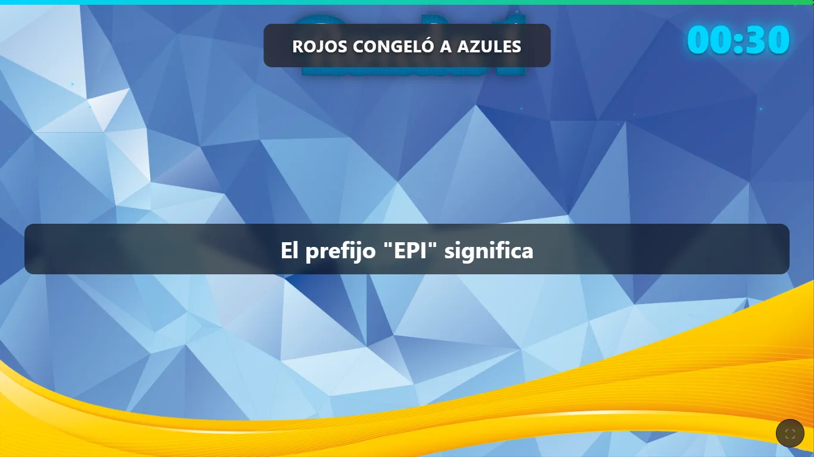
Estado de los dispositivos
En la barra inferior del coordinador, cada equipo lleva un icono con el estado de la descarga del contenido en su iPad: ✅ todo descargado, ⚠️ le falta algo (pasa el dedo o el ratón para ver qué) y ⏳ aún no ha informado. A la derecha, un resumen tipo «Contenido: iPads 12/12 ✅ · Pantalla ✅». Revísalo antes de empezar.
Marcador, bloqueos y final
Desde la barra «Equipos & puntos» de abajo (se despliega tocándola) das y quitas puntos a mano, congelas o descongelas a un equipo (❄) y das o quitas bonos (🎁). «❄ Congelar a todos» está en el panel de las pruebas de pulsador, y cuando hay algún equipo congelado aparece «🔓 Descongelar a todos» en esa barra de abajo. Entre pruebas puedes mostrar la pantalla de espera o el marcador (🏆 Ranking); al acabar, el marcador muestra la clasificación final.
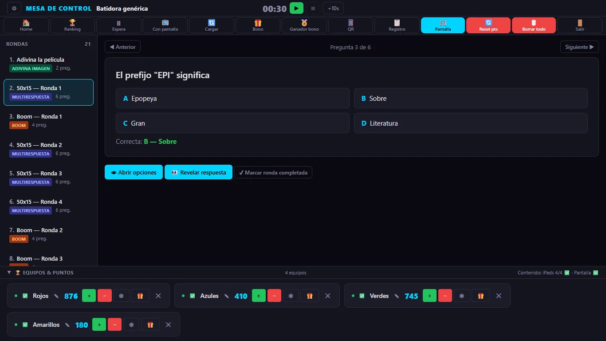
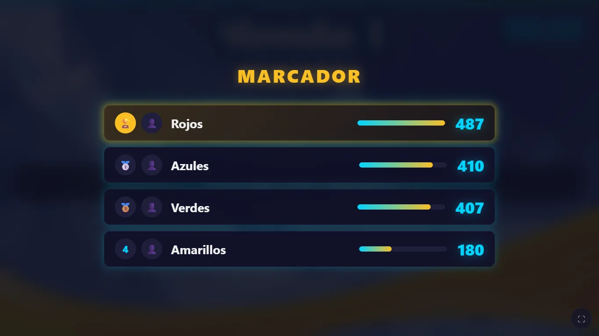
Montaje en sala
Para el día del evento: dejar la sala lista para jugar. Algunos detalles dependen de tu equipo concreto (ordenador, proyector, altavoces), así que adapta donde haga falta.
Qué necesitas
- Un ordenador de sala conectado al proyector o televisor.
- El proyector o televisor para el público.
- Altavoces conectados al ordenador (imprescindibles si hay prueba de canción).
- Un iPad, tablet u ordenador para el coordinador y un iPad por equipo.
- Buena wifi que cubra a todos los dispositivos.
El ordenador con pantalla extendida
El truco del montaje es que el ordenador trabaje con dos pantallas: la suya (donde controlas tú) y el proyector (donde ve el público). Así el público solo ve la pantalla bonita.
- Conecta el proyector al ordenador (normalmente HDMI).
- En la configuración de pantalla, elige «Extender» (no «Duplicar»).
- Abre la vista de pantalla del juego. Lo más cómodo es el botón «📺 Pantalla» de la cabecera del coordinador, que ya te lleva al juego correcto.
- Arrastra esa ventana al proyector y ponla a pantalla completa (F11 en la mayoría de navegadores).
- Comprueba que el público ve la pantalla de espera o el marcador.
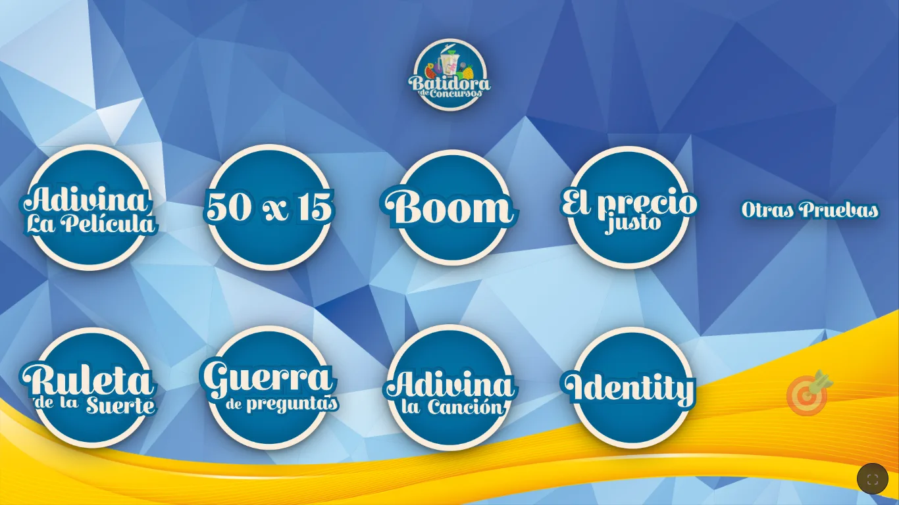
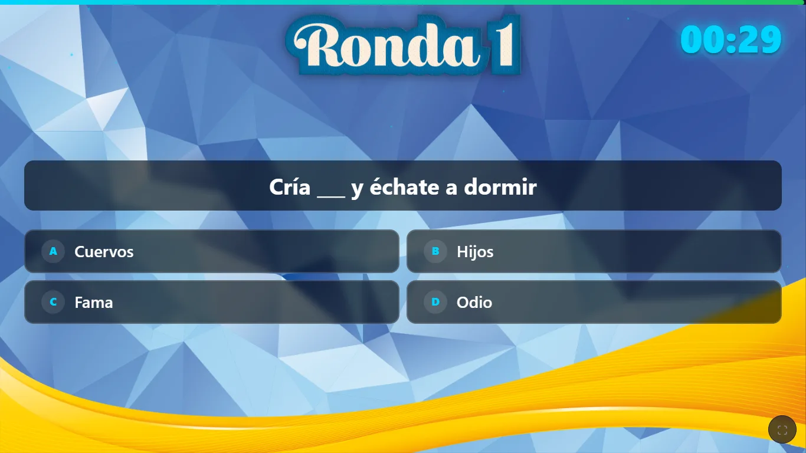
Los iPads de los jugadores
Cada equipo juega desde un iPad:
- Abre el navegador y entra en la vista de jugador (
/play). - El equipo elige el juego e introduce el código de acceso.
- Elige o crea su equipo (nombre y, opcional, foto).
- Listo. Si se desconecta (WiFi, bloqueo de pantalla) y vuelve, recupera su equipo automáticamente. Si respondió justo durante el corte (o la respuesta se perdió al cortarse), el iPad la envía solo al volver y cuenta con el tiempo que quedaba cuando la pulsaron (hasta 10 s atrás), no con el de llegada. El pulsador no se reenvía: llegaría tarde y sería injusto.
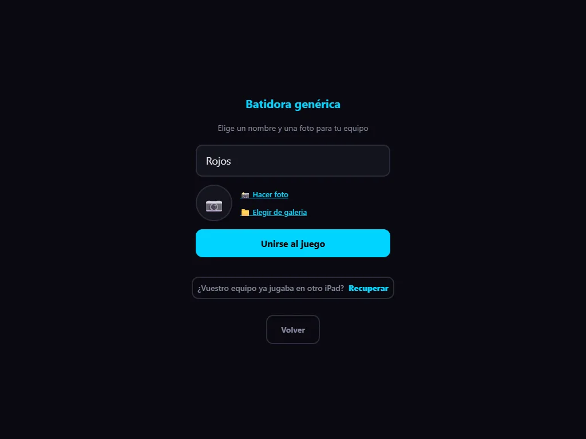
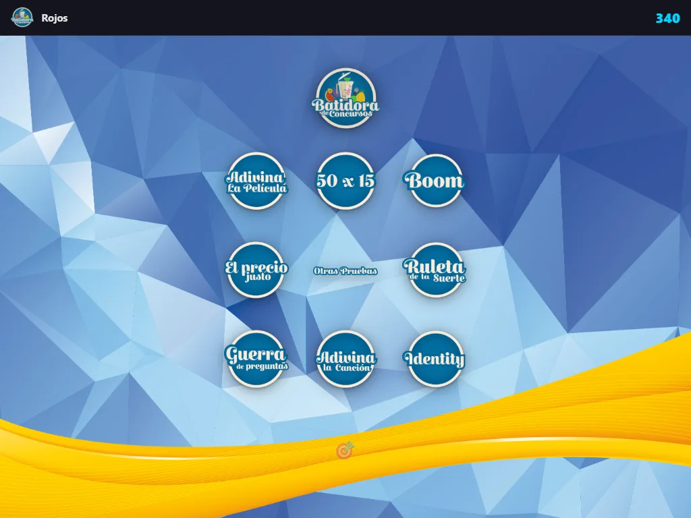
Descarga del contenido (precarga)
Al entrar en un juego, los iPads, la pantalla y el coordinador descargan y comprueban todas las imágenes, vídeos y audios que van a necesitar, con una barra de progreso. Así, durante la partida no hay esperas y por la WiFi solo viajan los mensajes del juego.
- Si todo va bien, aparece «¡Todo listo!» y continúa solo.
- Si algo falla (WiFi inestable), muestra qué archivos y por qué, con «Volver a descargar» (solo lo que falló) y «Continuar igualmente» (lo que falte se cargará al momento de usarlo).
- Si un archivo no existe en el servidor, lo indica aparte: reintentar no lo arregla, hay que volver a subirlo desde el backoffice.
- En la pantalla de sala, el aviso se cierra solo a los 20 segundos y deja una nota pequeña en una esquina, para no tapar la proyección.
- Al reconectar, lo ya descargado no se vuelve a bajar.
El sonido de «Adivina la canción»
El audio de la prueba de canción lo pone el Chaos Studio, el reproductor con la distorsión que aparece en el panel del coordinador al lanzar esa prueba. La canción suena en el aparato donde está abierto ese panel. Para que se oiga en la sala:
- Lleva esa prueba con el coordinador abierto en el ordenador de sala (el de los altavoces).
- La salida de audio de ese ordenador debe ir a los altavoces de la sala.
- Desde el Chaos Studio se elige la pista y se va quitando la distorsión mientras los equipos pulsan.
Jugar sin pantalla de sala
Si no hay proyector, cada iPad puede mostrar también lo que se vería en la pantalla. Se marca en el backoffice, al editar el juego: «Este juego va sin pantalla». En directo, el botón «📺 Con pantalla / 📵 Sin pantalla» de la cabecera del coordinador lo cambia en cualquier momento (por ejemplo, si el proyector falla a mitad).
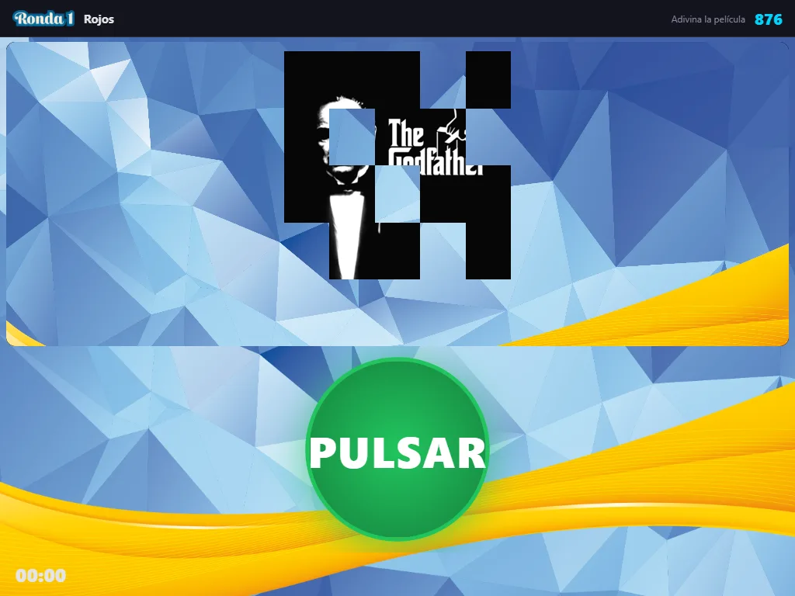
- En las pruebas en las que el iPad solo tenía el pulsador (pulsador, ruleta, Adivina la imagen, imagen fija, canción, Imagen que se aclara, Pictionary) aparece arriba el escenario, con lo mismo que vería la sala, y el pulsador debajo. En el Pictionary, el iPad del equipo que dibuja muestra su pizarra y los demás ven el dibujo en directo en el escenario. En el karaoke la letra ocupa todo el iPad, con el marco del color del equipo alrededor.
- En las que el iPad ya tenía la pregunta (multirespuesta, Precio justo, Boom, Identidad, Respuesta abierta) no cambia nada: el iPad ya muestra todo lo necesario.
- Sonido de vídeos y efectos: en el backoffice eliges si sale del ordenador (la página «Pantalla» abierta con altavoces, aunque no haya proyector) o de cada iPad; el botón «🔊 Sonido» del coordinador lo cambia en directo. Los navegadores no dejan sonar nada hasta que alguien toca la página: si va en el ordenador, la página «Pantalla» muestra «Haz clic en esta página para activar el sonido» hasta el primer clic (hazlo al montar la sala); los iPads no piden nada. Si va en los iPads, cada uno muestra en el centro un aviso grande «🔊 Toca aquí para activar el sonido»: con un toque por iPad basta para toda la partida (conviene pedirlo al empezar). Después, el Play del coordinador hace sonar el vídeo en todos. Un iPad que aún no se haya tocado ve el vídeo igualmente, en silencio y a la vez que los demás, y suena en cuanto lo tocan. Apple no deja que un iPad suene sin ese primer toque. Si se recarga la página, hay que volver a tocar. El audio de «Adivina la canción» sigue saliendo del Chaos Studio, como siempre.
Jugar sin internet (kit offline)
Para sitios sin internet existe el kit offline: una carpeta que convierte un ordenador con Windows en el servidor del juego. Los iPads se conectan a él por la WiFi de un router (que no necesita tener internet). Funciona igual que la web: backoffice, coordinador, iPads y pantalla de sala.
Qué necesita el ordenador
- Windows 10 u 11 de 64 bits (lo normal en cualquier portátil actual). En Mac no funciona.
- No hay que instalar nada: el kit lleva dentro todo lo que necesita (incluido su propio Node.js, en la carpeta
node). No toca el sistema; si borras la carpeta, no queda rastro. Da igual que el ordenador tenga otro Node instalado. - La primera vez, permiso en el aviso del firewall de Windows. En ordenadores de empresa o de colegio muy cerrados puede pedir la contraseña de administrador: sin ese permiso el kit arranca, pero los iPads no pueden conectarse. Por eso conviene probarlo días antes en el ordenador del evento.
Conseguir el kit
Se descarga desde el backoffice de la web y siempre sale con la última versión de GameShow (el servidor lo vuelve a preparar solo cada vez que se actualiza la app). Hay dos formas:
- 💾 Juego offline (en cada juego de la lista y dentro del juego): el kit con ese juego ya cargado, tal como está en ese momento. Es lo más sencillo si el ordenador no tiene aún el kit. Se prepara en unos segundos y se descarga: unos 40 MB más lo que ocupe el juego (con fotos y vídeos, 80 MB es normal).
- ⬇ Descargas › Kit offline para Windows: el kit vacío (unos 40 MB). Luego llevas los juegos con 📦 e «Importar juego (.zip)». Es lo práctico si el ordenador ya tiene el kit y solo quieres llevarle otro juego.
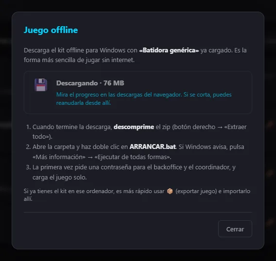
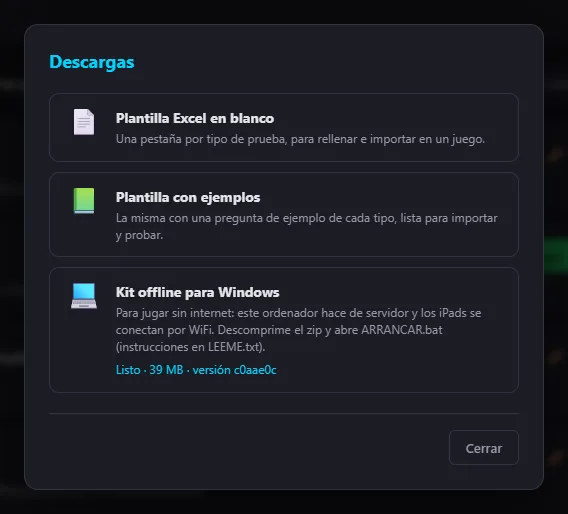
- Justo después de una actualización de GameShow, el kit tarda unos segundos (como mucho un par de minutos) en estar listo: la ventana lo dice, espera y la descarga empieza sola.
- El progreso se ve en las descargas del navegador. Si se corta, se puede reanudar desde ahí durante unas horas; si ya no deja, vuelve a pulsar 💾.
- Si avisa de que faltan archivos del juego, es que alguna imagen o audio ya no está en el servidor: revisa esas pruebas en el backoffice antes del evento.
Primer arranque
- Descomprime el zip descargado (botón derecho › «Extraer todo»). Desde dentro del zip no funciona. Tarda unos segundos.
- Si no usaste «Juego offline», lleva el juego al kit: 📦 exportar en la web e importar el .zip en el backoffice del kit.
- Conecta el ordenador y los iPads al mismo router y marca esa red como «Privada» en Windows (Configuración › Red e Internet › Wi-Fi › tu red › Tipo de perfil de red). Si queda como «Pública», los iPads no conectan; la ventana del kit te avisa.
- Doble clic en ARRANCAR.bat. Si Windows muestra un aviso azul («Windows protegió su PC»), pulsa «Más información» › «Ejecutar de todas formas».
- La primera vez pide una contraseña para el backoffice y el coordinador del kit (mínimo 8 caracteres; apúntala). Windows pregunta por el acceso a la red: permite Redes privadas.
- Con «Juego offline», el juego se carga solo en ese primer arranque (la ventana negra lo confirma: «✔ Juego … cargado») y ya aparece en el backoffice del kit, con el mismo estado y código que en la web (si estaba en borrador, publícalo antes del evento).
- Se abre una página con un QR grande para los iPads y los botones de backoffice y coordinador.
- No cierres la ventana negra mientras dure el juego. Si el servidor se detuviera por algo inesperado, se reinicia solo y el marcador se conserva.
Más juegos, actualizar y copias
- Otro juego en un kit que ya tienes: 📦 en la web e «Importar juego (.zip)» en el kit. También vale dejar el .zip en la carpeta
datos\importardel kit y volver a arrancar: se carga solo y se aparta adatos\importar\importados. - Si cambias el juego en la web después de descargarlo, el kit no se entera: vuelve a llevarlo (💾 o 📦).
- Los datos del kit (juegos, archivos y ajustes) viven en su carpeta
datos. Para hacer copia, cierra antes el kit y copia la carpeta entera. La contraseña maestra del kit está endatos\ajustes.env.
Todos los detalles están en el archivo LEEME.txt del kit.
Checklist final antes de empezar
Repasa esto con la sala montada y el público a punto de entrar.
- El juego está creado, con todas sus rondas y pruebas.
- No queda ninguna prueba marcada como ⚠ Incompleta.
- El juego está en estado publicado.
- Tienes anotado el código de acceso (o vas a usar el QR de sala).
- Tienes la contraseña del coordinador a mano.
- Si hay Pictionary con iPad de dibujo: la pizarra está enlazada con su QR, cargada y con la pantalla sin bloqueo automático.
- El proyector está conectado y en modo extender.
- La vista de pantalla está abierta en el proyector, a pantalla completa.
- En tu pantalla propia tienes el panel de coordinador a mano.
- Para la prueba de canción, el coordinador está abierto en el ordenador de sala y su audio va a los altavoces.
- Has hecho una prueba de sonido real por los altavoces.
- El coordinador está en el panel y responde.
- Cada equipo tiene su iPad dentro del juego correcto y con su equipo creado.
- Has lanzado una prueba de ejemplo y aparece en iPads y pantalla.
- El coordinador muestra «Contenido: iPads N/N ✅ · Pantalla ✅» (todos han descargado el contenido).
- Si hubo una partida de ensayo: has pulsado «Reiniciar puntuaciones» (o «Partida nueva»).
- Sin pantalla y con el sonido en los iPads: cada equipo ha tocado su aviso «🔊 Toca aquí para activar el sonido».
- Todos los dispositivos están en la wifi y la señal es estable.
- Sin internet (kit): lo has probado antes en este mismo ordenador (firewall permitido y un iPad conectado).
- Sin internet (kit): la red está como «Privada» en el ordenador y la ventana negra sigue abierta.
- Sin internet (kit): el juego del kit es la última versión (si lo cambiaste en la web, vuelve a llevarlo).
Si todo está marcado, estás listo para jugar. ¡A disfrutar del concurso!
↑ Volver arriba